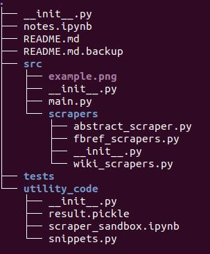

The objective of the project is to - scrape data on footballers from various sources - aggregate data on so that it can be attributed to individual footballers, and - store the data in appropriate data sinks.
The idea is not necessarily to scrape large volumes of data but to demonstrate ways to:
- scrape data on a single entity from disparate data sources and combine them under the reference of that single entity,
- scrape different types of data eg. tabular, text, images, etc.
- store data in more than one database type,
- scrape different kinds of sites, including ones needing browser interaction and JS execution.
- deploy the scraper in a Docker container on EC2 and have it run at regular intervals.
Time permitting, I could build a rudimentary website based on either Flask or FastAPI where one can type in the name of a player and get collated info from all the various sources.

The meat of the project is in the /src folder. The /scrapers folder within it contains an abstract base class for a scraper and also classes to create various scrapers for FBRef and Wikipedia.
There are three different scraper classes in fbref_scrapers.py. These include ones for:
- retrieving the links of teams the Big 5 European leagues,
- retrieving the links of the player pages of the said teams, and
- crawling the player pages to retrieve information on individual players.
The data thus retrieved is stored in two dataframes, one for personal information and one that accumulates all the statistics on the player's page. Both the tables have a player_id column that could be used to join them for SQL queries.
main.py“ coordinates the entire
Only about half the intended functionality has been implemented but that can be accessed simply by running main.py in a REPL (assuming the required packages are available).
At the end of the run, two objects will be available to the user: pds of class PlayerDataScraper and wcs of class WikiContentScraper.
The results of pds can be accessed by calling the attributes pds.personal_info_df and pds.stats_df which contain the personal information and stats dataframes respectively.
The results of wcs are a bit harder to parse at this stage. wcs.content_dict contains the content extracted for the last player processed. Calling wcs.content_dict.keys() will give you an idea of the structure extracted from that player's Wikipedia page. Accessing the content of a given key will display the paragraphs under the section the key represents.
For example if the last processed player was Neymar Jr of of Paris St. Germain, content_dict.keys() would return
dict_keys(['opening', ('Early life',), ('Club career', 'Santos', 'Youth'), ('Club career', 'Santos', '2009: Debut season'), ('Club career', 'Santos', '2010: Campeonato Paulista success'), ('Club career', 'Santos', '2011: Puskás Award'), ('Club career', 'Santos', "2012: South America's best player"), ...
...('International career',), ('International career', '2011 South American Youth Championship and Copa América'),...
... ('Outside football', 'Personal life'), ('Outside football', 'Wealth and sponsorships'), ('Outside football', 'Media'), ('Outside football', 'Music'), ('Outside football', 'Club'), ('Outside football', 'International'), ('Outside football', 'Individual')])
This represents the structure of the Wikipedia page for that particular player. Accessing wcs.content_dict[('International career', '2011 South American Youth Championship and Copa América')] would return the content:
"Neymar was the leading goal scorer of the 2011 South American Youth Championship with nine goals, including two in the final, in Brazil's 6–0 win against Uruguay.[193] He also took part at the 2011 Copa América in Argentina, where he scored two goals in the first-round game against Ecuador. He was selected 'Man of the Match' in Brazil's first match against Venezuela, which ended a 1–1 draw. Brazil were eliminated in the quarter-finals in a penalty shoot-out against Paraguay (2–2 a.e.t.), with Neymar being substituted in the 80th minute.[194]\n"
(note: all the keys are tuples except 'opening', which is a string.)
So, as mentioned, wcs.content_dict contains the Wikipedia content of the last-processed player. wcs.consolidated_dict simply contains the content_dicts of all players indexed by the same player_id used in pds.personal_info_dict
(throttled)
There are comprehensive docstrings available for both these objects that can be accessed by help(pds) or help(wcs).
use Playwright to scrape ESPN json of wiki content store resulting data in Postgres or MongoDB as appropriate. write tests